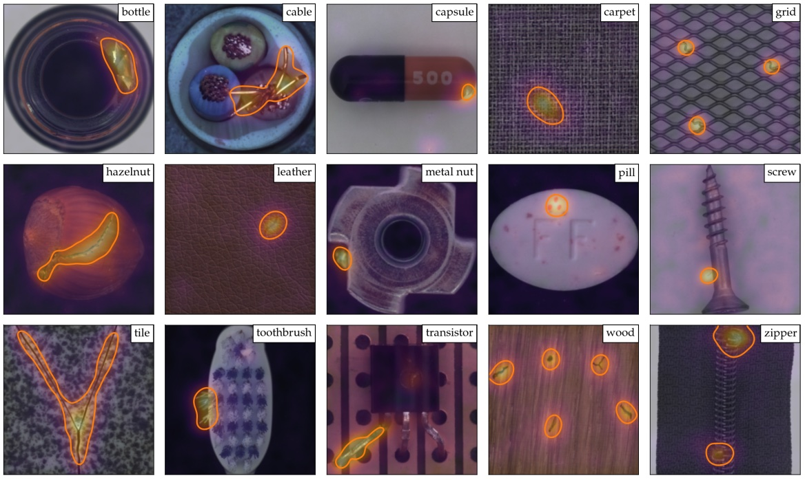
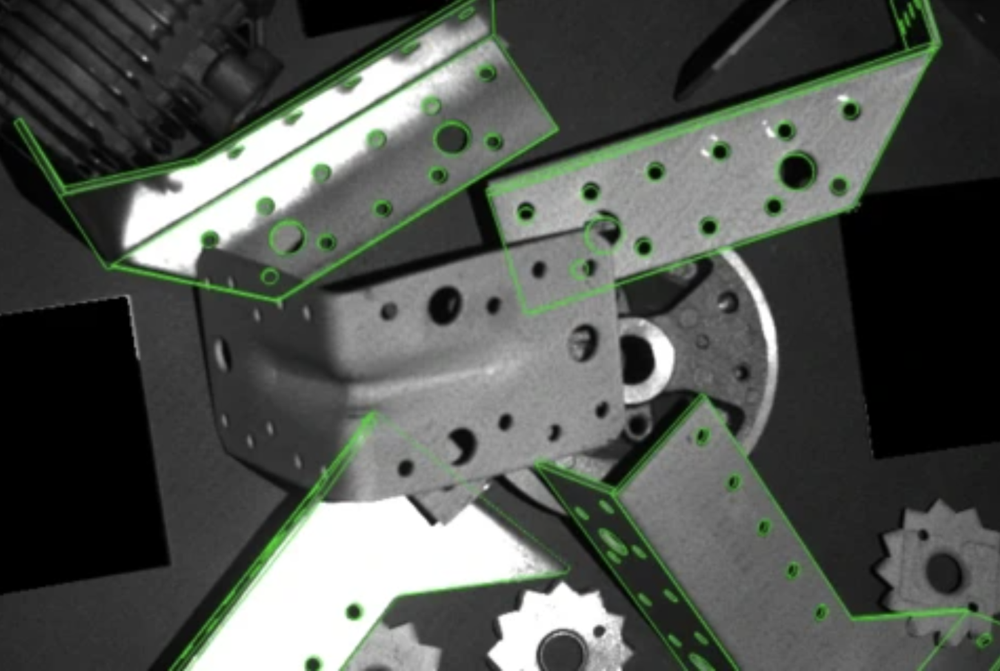

Computer Vision based anomaly detection
for efficient quality control

This project is about implementing Computer Vision techniques to detect defects in manufactured parts and improve the overall production quality
The main objective of this project is to perform quality control of manufactured parts with the use of
different types of cameras. The the complete RGB image is divided into the smaller feature images as
given by the requirements from the customers and the CV model is trained on these feature images. Different
CNNs such as Resnet18, MobileNet, EfficientNet, etc., are used to extract the relavant features and different
ML techniques such as Support Vector Machines, K-Nearest Neighbors, Isolation Forests, etc., are used to
perform One class classification due to the large imbalanced data set. These models are trained on AWS-Sagemaker
and deployed on Edge devices. Also image preprocessing pipelines are developed on AWS-Glue. An anomaly detection accuracy of
95% and 0% False positive rate was achieved.

This project is about implementing Computer ViSion techniques to detect overlapping objects and classify the objects into different classes to improve the overall quality of the product
The main objective of this project is to perform quality control on the assembly line with the use of
different types of cameras. I developed, trained, and monitored object detection algorithms tailored
for the demanding environment of manufacturing shop floors. Leveraging state-of-the-art methodologies
such as SSD300 and YOLOv7, I've honed my skills in PyTorch, OpenCV, and various other libraries crucial
for efficient algorithm development achieving 96% accuracy. These algorithms not only enable real-time identification and tracking
of objects but also contribute to enhancing safety protocols and optimizing production processes. Moreover,
I have adeptly navigated deployment strategies, ensuring seamless integration of these algorithms onto edge
devices for local processing and leveraging AWS cloud services for scalable training and building robust image
preprocessing pipelines. Through this journey, I've gained invaluable insights into the intricacies of industrial
settings, algorithm optimization, and deployment architectures, reaffirming my commitment to delivering innovative
solutions at the intersection of technology and manufacturing.

Donec eget ex magna. Interdum et malesuada fames ac ante ipsum primis in faucibus. Pellentesque venenatis dolor imperdiet dolor mattis sagittis magna etiam.

Donec eget ex magna. Interdum et malesuada fames ac ante ipsum primis in faucibus. Pellentesque venenatis dolor imperdiet dolor mattis sagittis magna etiam.

Donec eget ex magna. Interdum et malesuada fames ac ante ipsum primis in faucibus. Pellentesque venenatis dolor imperdiet dolor mattis sagittis magna etiam.

Donec eget ex magna. Interdum et malesuada fames ac ante ipsum primis in faucibus. Pellentesque venenatis dolor imperdiet dolor mattis sagittis magna etiam.